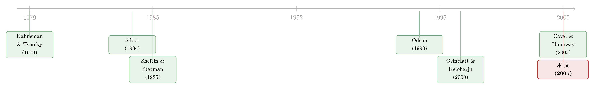

死扛亏损的人，为什么没亏钱？——交易池里的「处置效应」迷案
本文读的是 Locke & Mann (2005, Journal of Financial Economics)：芝加哥商品交易所的全职期货交易员确实「死扛亏损、快跑盈利」，看上去就是教科书里的处置效应；可作者翻遍数据，找不到这种行为带来的任何成本。真正能预测谁明天会赚钱的，是「出手快不快」——而且对盈利单和亏损单一样灵。换句话说，纪律值钱，但值钱的那一部分，恰恰不是「不肯认赔」。
1 一个被反复念叨的词：纪律
先讲个场景。你去翻任何一本华尔街的交易回忆录，几乎都会撞见同一个词——纪律 (discipline)。芝加哥期货交易所的老会员 Everett Klipp 在他的回忆录里写下一句近乎偏执的话：「要做一个成功的交易员，我必须热爱亏钱、痛恨赚钱。第一笔止损是最好的止损。交易是一种纪律。」摩根士丹利的 CEO John Mack 在一份 1991 年的证词里说得更直白：「我判断一个交易员的关键标准，是他能不能止损。止不了损，就别干这行。」贝尔斯登的「Ace」Greenburg 则把它翻译成做生意的土话：「手上有烂货，赶紧标价，赶紧卖掉。」
这些话听起来像鸡汤，但它们背后藏着一个学术上极其要紧的问题。
行为金融学这些年讲了一个广为人知的故事：散户是不理性的。Odean (1998a) 在一个美国散户样本里发现，他们卖掉的赢家股票，之后跑赢了他们死攥着不放的输家股票——这就是经典的 处置效应 (disposition effect)：过早卖出盈利，过久持有亏损。Grinblatt & Keloharju (2000) 在芬兰的全样本里，控制了交易风格之后，同样发现散户不愿意兑现亏损。（关于「真金白银下，投资者偏好到底长什么样」，可参见《用真金白银投出来的前景理论》。）
可问题来了——散户不理性，这有什么好惊讶的？ 真正悬而未决的是另一头：那些靠交易吃饭、要用利润去付交易席位租金和机会成本的职业交易员，他们会不会也犯同样的毛病？如果会，而且这毛病真的让他们亏了钱，那行为金融对资产价格的那套说法就硬气多了——因为推动价格的，本就是这些重仓的专业玩家，不是边角料散户。反过来，如果职业交易员的「纪律」能把行为偏差的成本压到几乎为零，那处置效应顶多是个无伤大雅的小怪癖。
这篇论文，就是去交易池里把这件事查个水落石出。
2 数据：芝加哥交易池里的全职「黄牛」
作者用的是芝加哥商品交易所 (Chicago Mercantile Exchange, CME) 的逐笔交易数据，由美国商品期货交易委员会 (CFTC) 提供。样本是 1995 年的四个最活跃合约：两个货币（德国马克、瑞士法郎）和两个非金融商品（活牛、猪腩）。
样本怎么筛？凡是 1995 年里、在至少 10 个不同交易日、为自己账户做过至少 5 笔交易的交易员，统统纳入，得到 334 名交易员。别小看这个口径——这些人扛起了这些合约里个人账户成交量的 99.5%。被剔除的要么是过客，要么是在帮经纪商擦错单的。
这是一群什么样的人？他们是池子里的 场内交易员 (floor traders)，自己给自己做账，靠频繁进出、每笔赚一点点的方式吃饭，几乎从不留隔夜仓。Table 1 里有几个数字很能说明问题：一笔来回交易，四个合约平均下来每张合约只赚一个最小跳动价位 (tick) 上下——德国马克每张 $6.49，瑞士法郎 $8.93，活牛 $5.64，猪腩 $15.53。而瑞士法郎合约一天的平均价格波动幅度有 $1,229，差不多是 $12.50 一个 tick 的 100 倍。也就是说，他们在一条天天大起大落的河里，反复捞着一分一厘的小钱。
这群人有个研究上的好处：他们当天清仓。Kuserk & Locke (1993) 和 Manaster & Mann (1996) 都证实过场内交易员极少留隔夜仓。这意味着「盈利还是亏损」可以在分钟级别上干净地定义出来，不必担心被长期持仓的复杂性污染。
作者把 1995 年劈成两半：用上半年观察行为、检验处置效应；把下半年留作样本外 (out-of-sample)，专门检验「纪律」能不能预测后来的成败。
3 怎么给「一笔交易」记账
要研究处置效应，第一步是个看似枯燥、实则要命的问题：什么叫「一笔交易」？它赚了还是亏了？持有了多久？
散户买一只股票、过两个月卖掉，干净利落。可场内交易员的成交序列乱成一团：一分钟里买三张、卖两张，下一分钟又反手。作者于是用 平均成本 (average cost) 法来记账——这一点沿用了 Silber (1984) 的做法，避免了「指定某张买单对某张卖单」或 LIFO/FIFO 那种主观配对。持有时间也用类似办法滚动计算：每过一分钟加一分钟，加仓时按新合约摊薄、减仓时剩余部分继续计时。
真正巧妙的，是作者构造了一个叫 潜在退出分钟数 (potential exit minutes) 的东西。具体做法是：对每一笔交易，每分钟都用当时的平均池价 (pit price) 做一次 盯市 (mark-to-market)。
举个论文里的原话例子：一笔仓位持有了 20 分钟，最后是盈利平掉的。在这 20 分钟里，如果有 12 分钟它的盯市是浮盈、8 分钟是浮亏，那么对这笔交易，作者记下 12 个潜在退出分钟——也就是这笔最终盈利的交易，先前有 12 次机会可以「落袋为安」却没落。亏损单同理：它的潜在退出分钟数，就是先前可以止损却没止的次数。
这一步为什么关键？因为它把「死扛」这个含糊的词，变成了可以数出来的次数。一个被处置效应俘虏的人，会在大量浮亏的分钟里坐着不动；一个有纪律的人不会。作者还顺手算了这些分钟里的平均持仓规模和盯市深度——这就引出了后面两把丈量「纪律」的尺子。
顺带一提，池子里约 20% 的交易是「同分钟内对敲掉」的（德国马克高达 25%，猪腩最低 18%，见 Table 2）。这类 分钟内交易 (intraminute trades) 无法排序，作者把它们的持有时间记为零、单独处理，免得污染持仓时间的计算。
4 第一幕：他们确实在「死扛亏损」
好，账记清楚了。先看最朴素的那个问题：把全体交易员放在一起，他们持有亏损单的时间，是不是比盈利单更长？
答案是确实如此，而且在统计上显著——交易员持有亏损头寸的时间，始终显著长于盈利头寸。这跟 Odean (1998a) 在散户身上看到的图景，初看一模一样。处置效应，似乎在职业交易员身上也活得好好的。
如果故事到此为止，那行为金融学就赢了。可作者紧接着追问了一个 Odean 没法在散户数据里追的问题：
这种死扛，让他们亏钱了吗？
于是反转出现了。作者找不到任何与这种行为相关的成本——这与 Odean (1998a) 直接相左。不仅如此，在上半年内部，「更爱扛亏损」和「交易更成功」之间，连个同期相关都没有。
这就尴尬了。一个看上去是处置效应的行为，却查不出它的代价。难道整套行为金融的叙事，在职业玩家这里失灵了？
5 真正关键的一步：把「纪律」拆成两把尺子，放到样本外去考
作者没有停在「找不到成本」这个略显消极的结论上。他们换了个更狠的问法：抛开同期相关，上半年的行为能不能预测下半年的成败？
为此，他们参照 Silber (1984) 对期货交易成功要素的刻画，定义了两把丈量纪律的尺子：
- 第一把：交易速度 (trading speed)——多快把仓位对掉。作者的理由很微观结构：在期货池这种高频环境里，交易员的信息优势来自订单流（Ito et al. (1998) 称之为 半基本面信息 (semi-fundamental information)），这种优势转瞬即逝。如果一个交易员真的有纪律、用「时间」而不是「价格」作为预设的退出约束，那他一旦信息优势耗尽就该迅速离场。
- 第二把：暴露 (exposure)——长时间持有的仓位上、每张合约的浮亏有多大。有纪律的人，不会眼睁睁坐在一笔越扛越大的浮亏上，盼着它哪天翻身。
然后把这两把尺子在样本外的下半年去对成败。结果是：
两个纪律指标都与后续的成功正相关。出手越快的交易员，将来越成功；越爱扛大额浮亏的交易员，将来越不容易成功。
到这里，行为派似乎又扳回一城——「扛大亏损的人后来失败」，这不正是处置效应有代价的铁证吗？
但真正关键的一步在于下面这句。 作者做了一个分解（他们特意致谢匿名审稿人提出这个建议）：把「出手快」拆成「平盈利单的速度」和「平亏损单的速度」分别看。如果死扛亏损是病根，那应该是「平亏损单慢」在预测失败。可数据说：
平掉盈利单的速度，在预测成败上和平掉亏损单的速度一样灵。
这一刀下去，处置效应的解释就站不住了。因为处置效应是个不对称的故事——病在「不肯认赔」，不在「急着兑现盈利」。可如果盈利单平得慢同样预示失败，那被惩罚的根本不是「死扛亏损」这个偏差，而是笼统的「慢」。于是作者下了一个很克制、也很诚实的判断：
缺乏基于时间的纪律是有代价的（体现为未来成功概率更低），但这个代价并不来自处置效应。
那「慢」到底惩罚的是什么？作者给了一个更合身的候选：过度自信 (overconfidence)。把一笔交易想成基于某个贝叶斯先验开仓、之后不断有新信息进来。一个过度自信的人，会给先验压太多权重、对负面新信息充耳不闻太久——他自然又慢、又爱扛亏损。如果纪律指标其实在度量过度自信，那「不自律者后来更失败」就和 Odean (1998b)、Daniel et al. (2001) 那套「过度自信者过度冒险、跑输理性人」的逻辑严丝合缝了。（关于赚过钱的人为何更爱交易这条「过度自信」暗线，可参见《赚过钱的人，更爱交易》。）
6 收尾的一击：换一把「基准」的尺子
还有最后一个让人不安的地方。既然「扛亏损长于盈利」查不出成本，作者就回头审视了一个最底层的假设：我们凭什么用「零」来界定盈亏？
零基准 (zero benchmark) 当然直观——浮盈为正、浮亏为负。但对一个职业交易员来说，更合理的或许是净盈利基准：他每天来池子里站着，要付席位租金、要付机会成本，所以他心里盯着的「盈亏线」未必是零，而是一个预期利润。这就有点像用市场模型去定义超额收益，而不是拿原始收益硬比。
于是作者换上以预期利润为锚的基准，重新数了一遍。结果是：几乎找不到证据表明交易员持有「净亏损」的时间更长。 也就是说，那个看似铁板钉钉的处置效应，一换基准就大半蒸发了。
把这一击和第 5 节连起来读，整篇论文的核心就立住了：职业交易员「死扛亏损」的表象，很可能是理性的、与基准选择高度相关的产物，而不是一种有代价的偏差。 真正值钱的纪律是「快」，可它对盈亏两端一视同仁，所以并非处置效应那个不对称的故事。
这并不等于说「职业交易员永远理性、行为金融全错」。作者自己很小心地指出，他们的结论是逐笔 (trade-by-trade) 层面的、时间尺度以分钟计。一旦盈亏在「累计」意义上被心理账户加总起来，逐笔层面看不见的成本，可能会重新浮现——这正是 Coval & Shumway (2005) 那条路给本文留下的活口。
7 文献脉络
把这条线捋一捋，会看到行为金融如何一路从理论走到交易池：
最上游是 Kahneman & Tversky (1979) 的 前景理论 (prospect theory)——人在盈亏面前的效用是不对称的、围绕参照点折弯。Shefrin & Statman (1985) 把它落到金融里，正式命名了「过早卖赢家、过久扛输家」的处置效应，并指出其代价（比如多缴税）。这之后是大样本实证的时代：Odean (1998a) 在美国散户里把它量了出来，Grinblatt & Keloharju (2000) 在芬兰全样本里在控制交易风格后复现了它。

可这些证据都长在散户身上。职业一端，Silber (1984) 早就刻画过期货池里黄牛的成功要素——信息优势极短命，盈利与出手速度高度相关，这恰是本文两把纪律尺子的源头。几乎同期，Coval & Shumway (2005) 在芝加哥期货交易所发现交易员上午亏损后下午会加大冒险、且把亏损单持有得更久，并把它解读为损失厌恶有代价。本文正卡在这个十字路口：用 CME 的逐笔数据，对「职业交易员是否被处置效应所累」给出一个否定的回答，并把分歧定位到方法论的差异上——逐笔 vs. 时间累计、是否按交易聚合。
8 评论与延伸（Q&A + 研究方向）
(a) 几个可能的疑问
Q：本文和 Odean (1998a) 结论相反，是不是哪一方错了？
不必非此即彼。两者最可能的差异在资产与时间尺度：Odean 看的是散户持有数月的股票，本文看的是场内交易员持有几分钟、当天清仓的期货。处置效应的代价或许真实存在于「长持有、有税收和动量后果」的环境里，却在「分钟级、当天平仓」的池子里被理性地消化掉了。
Q：「找不到成本」会不会只是检验功效不够？
这是最该担心的质疑。作者的回应方式是把检验推到样本外并做盈利/亏损分解——如果真有处置效应的代价，应当表现为「平亏损单慢」单独预测失败。结果是盈亏两端的速度同等有效，这种对称性很难用「样本太小没测出来」来搪塞，它在质上就不符合处置效应的不对称特征。
Q：换成预期利润基准就让效应消失，会不会是「调参调到结论满意为止」？
有这个风险，但作者的动机是先验合理的：职业交易员有显性的租金与机会成本，把盈亏线定在一个正的预期利润处，类似资产定价里用市场模型定义超额收益。更稳妥的读法是：处置效应的结论对基准选择高度敏感，而这本身就是一个值得警惕的发现。
Q：场内交易员是不是太特殊，结论推广不到别人？
是的，外部效度有限。他们持仓以分钟计、几乎不留隔夜、靠订单流的短命信息吃饭。结论顶多说「在这种高频、信息极短命的环境里，处置效应没有代价」，不能直接搬到长持仓的基金经理或散户身上。
Q：那「纪律」到底是什么？
在本文里，纪律被操作化为「出手速度」和「不坐大额浮亏」两件事，并被进一步怀疑为过度自信的反面。它不是「会止损」这一条单独的美德，而是一种对新信息及时反应、不给先验过度加权的整体倾向。
Q：为什么逐笔层面没成本，累计层面可能就有？
因为心理账户可能是累计记账的。逐笔看，每笔扛亏损都不亏；但若交易员把一上午的盈亏加总成一个参照点，那么 Coval & Shumway (2005) 式的「上午亏了下午乱冒险」就会在累计层面冒头，而这恰恰是逐笔分析按设计看不见的。
(b) 几个可能的研究问题与提案
1. 把「逐笔 vs. 累计」之争用同一套数据一次性了结。 【经济故事】本文和 Coval-Shumway 的分歧，被作者归因于盈亏的定义方式。能不能在同一份逐笔数据上，同时构造「逐笔基准」和「日内累计基准」，看处置效应的代价是否随基准从逐笔切到累计而由无变有？这将直接定位行为偏差到底栖息在哪个心理账户层级。 【可行性】高。只要拿到一份带交易员 ID 的逐笔期货数据即可，识别靠的是同一交易员、同一天内两种基准下持仓时间与后续盈亏的对照，不需要外生冲击。
2. 把「纪律」搬进公司债的做市与持仓。 【经济故事】公司债是典型的 OTC、低频、信息极不对称市场，做市商常被迫长时间扛住一笔难脱手的库存。这里的「扛亏损」可能既有处置效应的成分，也有「找不到买家」的流动性成分。能不能用本文的「潜在退出分钟/日数」思路，把做市商持仓的「主动死扛」和「被动套牢」拆开？ 【可行性】中。TRACE 加上交易商身份（如带匿名做市商标识的监管数据）可行；难点在于公司债成交稀疏，「潜在退出机会」要用可成交报价而非逐分钟池价来近似，识别会更脏。
3. 外资持有人是否更「有纪律」？ 【经济故事】Grinblatt & Keloharju (2001) 已发现芬兰本地散户和外国机构的交易风格差异巨大。把本文的纪律度量用到一个能区分本地/外资持有人的市场，看外资是否系统性地「出手更快、更不扛亏损」，能为「谁推动价格、谁只是噪声」提供新证据。 【可行性】中。需要带投资者类型标签的持仓/成交数据（如某些新兴市场的交易所明细），识别可借助指数纳入等改变外资可投资度的事件做准自然实验。
4. 「速度纪律」是不是过度自信的代理？做一次直接对接。 【经济故事】本文把「慢」怀疑成过度自信，但没有独立的过度自信测度。若能把交易速度与某种外生的过度自信代理（如交易员的性别、年龄、过往连胜后的行为变化）对接，就能检验纪律指标究竟在度量「认知约束」还是单纯的「能力」。 【可行性】中。需要交易员层面的人口学或履历信息，往往不易获取；可退一步用「连续盈利后是否变慢/加仓」这类纯交易数据内生构造的代理。
9 我的判断
这篇论文最漂亮的地方，不在它「推翻」了什么，而在它逼自己把一个看似确凿的结论一步步证伪。它先老老实实承认「职业交易员确实扛亏损更久」，再用三记重拳把这个表象拆穿：找不到同期成本、盈亏两端的速度对称地预测成败、换个基准效应就蒸发。这种「与自己最初的发现作对」的诚实，是好实证该有的样子。它的核心贡献，是把行为金融的舞台从散户挪到了重仓的职业玩家，并给出一个有节制的结论——纪律值钱，但值钱的不是处置效应那一面。
我对识别的主要担心有两点。其一，功效与零结果：「找不到成本」终究是个零假设不被拒绝的结论，作者靠样本外检验和盈亏分解把它做得相当扎实，但它在哲学上仍弱于一个被拒绝的零假设。其二，基准的内生性：用「预期利润」当锚让效应消失，这一步既是洞见也是软肋——如果基准本身是从交易员行为里估出来的，就有把要解释的东西偷偷塞进解释项的风险，值得用一个完全外生的盈亏线再验一次。
我接下来最想看到的，是把这套逐笔方法和 Coval-Shumway 的累计方法放进同一份数据里对决（提案 1）：处置效应的代价究竟是不存在，还是只是躲进了「累计」这个更高的心理账户层级？在低频、信息更不对称的公司债市场里重做一遍（提案 2），大概会得到一个介于散户与场内黄牛之间的、更耐人寻味的答案。
参考文献
Coval, J., Shumway, T. (2005). Do behavioral biases affect prices? Journal of Finance, forthcoming.
Daniel, K., Hirshleifer, D., Subrahmanyam, A. (2001). Overconfidence, arbitrage, and equilibrium asset pricing. Journal of Finance 56(3), 921–965.
Grinblatt, M., Keloharju, M. (2000). The investment behavior and performance of various investor-types: a study of Finland's unique data set. Journal of Financial Economics 55(1), 43–67.
Grinblatt, M., Keloharju, M. (2001). What makes investors trade? Journal of Finance 56(2), 589–616.
Ito, T., Lyons, R.K., Melvin, M. (1998). Is there private information in the FX market? The Tokyo experiment. Journal of Finance 53(3), 1111–1130.
Kahneman, D., Tversky, A. (1979). Prospect theory: an analysis of decision under risk. Econometrica 47(2), 263–291.
Kuserk, G., Locke, P.R. (1993). Scalper behavior in futures markets: an empirical examination. Journal of Futures Markets 13(4), 409–431.
Locke, P.R., Mann, S.C. (2005). Professional trader discipline and trade disposition. Journal of Financial Economics 76(2), 401–444.
Manaster, S., Mann, S.C. (1996). Life in the pits: competitive market making and inventory control. Review of Financial Studies 9(3), 953–975.
Odean, T. (1998a). Are investors reluctant to realize their losses? Journal of Finance 53(5), 1775–1798.
Odean, T. (1998b). Volume, volatility, price, and profit when all traders are above average. Journal of Finance 53(6), 1887–1934.
Shefrin, H., Statman, M. (1985). The disposition to sell winners too early and ride losers too long: theory and evidence. Journal of Finance 40(3), 777–790.
Silber, W.L. (1984). Marketmaker behavior in an auction market: an analysis of scalpers in futures markets. Journal of Finance 39(4), 937–953.